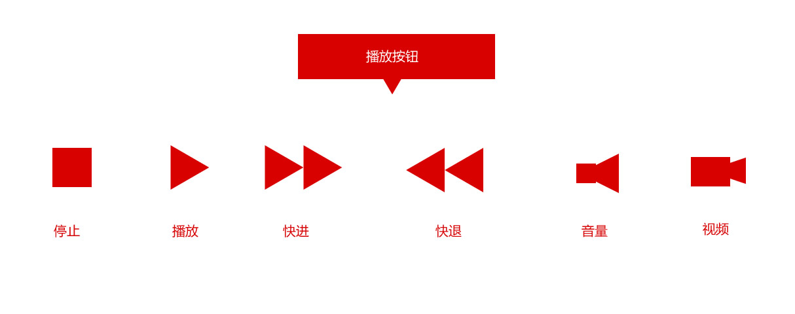
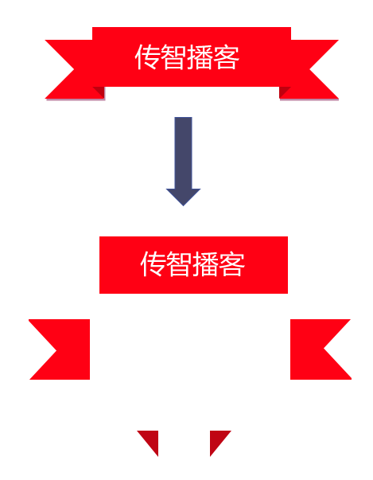
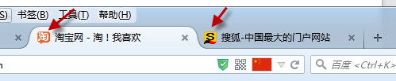
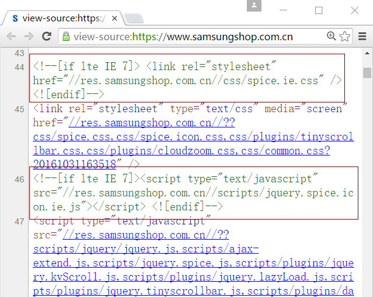

1.滑动门
先来体会下现实中的滑动门,或者你可以叫做推拉门：

1.1 滑动门出现的背景
制作网页时，为了美观，常常需要为网页元素设置特殊形状的背景，比如微信导航栏，有凸起和凹下去的感觉，最大的问题是里面的字数不一样多，咋办？

为了使各种特殊形状的背景能够自适应元素中文本内容的多少，出现了CSS滑动门技术。它从新的角度构建页面，使各种特殊形状的背景能够自由拉伸滑动，以适应元素内部的文本内容，可用性更强。 最常见于各种导航栏的滑动门。
1.2 核心技术
核心技术就是利用CSS精灵（主要是背景位置）和盒子padding撑开宽度, 以便能适应不同字数的导航栏。
一般的经典布局都是这样的：
<li>
<a href="#">
<span>导航栏内容</span>
</a>
</li>
总结就是：
- a 设置 背景左侧，padding撑开合适宽度。
- span 设置背景右侧， padding撑开合适宽度 剩下由文字继续撑开宽度。
- 之所以a包含span就是因为 整个导航都是可以点击的。
2.CSS 常用技巧
2.1 margin 负值
制作网页时，为了拉开元素之间的距离，常常给元素设置大于0的外边距margin。其实，在实际工作中，为了实现一些特殊的效果，经常需要将元素的margin设置为负值，如下图所示的元素重叠效果。
注意技巧：
1.定位的盒子层级高于浮动和标准流。
2.提高定位盒子的层级用 z-index。
2.2 css三角的写法
易迅、网易三角的做法：
京东三角的做法：
综合做法：

课后练习：

2.3 给网页添加ico图标

- 首先自己或者网页美工制作小图标。
- 利用 http://www.bitbug.net/ 进行转换 生成的是： favicon.ico 的小图标
<link rel="shortcut icon" href="favicon.ico" />注意路径哦！
2.4 关于logo 的优化(建议)
1.一般情况下，logo给的是背景图片
- 我们要在logo里面放一个h1标签，就是为提权，说明这个盒子很重要。
- 我们继续在h1 里面放一个链接a 要和 logo盒子一样大。
- 注意 a链接 里面要放上网站标题。（是为了优化）
链接里面的文字对用户体验不好，这里不需要看见。 有两种方法实现：
利用text-indent:-2000em; 或者 利用padding 挤开盒子 并且overflow 切割
- 给链接添加 title 提示文本 增强用户体验。
3.CSS文本属性
3.1 letter-spacing:字间距
letter-spacing属性用于定义字间距，所谓字间距就是字符与字符之间的空白。其属性值可为不同单位的数值，允许使用负值，默认为normal。
3.2 word-spacing:单词间距
word-spacing属性用于定义英文单词之间的间距，对中文字符无效。和letter-spacing一样，其属性值可为不同单位的数值，允许使用负值，默认为normal。
word-spacing和letter-spacing均可对英文进行设置。不同的是letter-spacing定义的为字母之间的间距，而word-spacing定义的为英文单词之间的间距。
3.3 word-break:自动换行
normal 使用浏览器默认的换行规则。
break-all 允许在单词内换行。
keep-all 只能在半角空格或连字符处换行。
3.4 white-space:空白符处理
使用HTML制作网页时，不论源代码中有多少空格，在浏览器中只会显示一个字符的空白。在CSS中，使用white-space属性可设置空白符的处理方式，其属性值如下：
normal：常规（默认值），文本中的空格、空行无效，满行（到达区域边界）后自动换行。
pre：预格式化，按文档的书写格式保留空格、空行原样显示。
nowrap：空格空行无效，强制文本不能换行，除非遇到换行标记 <br />
。内容超出元素的边界也不换行，若超出浏览器页面则会自动增加滚动条。(重要)
3.5 text-overflow 文字溢出
ext-overflow : clip | ellipsis
设置或检索是否使用一个省略标记（...）标示对象内文本的溢出
clip : 不显示省略标记（...），而是简单的裁切
ellipsis : 当对象内文本溢出时显示省略标记（...）
4. CSS兼容性
在网络中浏览器众多，因为不同浏览器使用内核及对W3C标准的支持不一样，各个浏览器对于页面的解释呈视也不尽相同。以及用户客户端的环境不同（如分辨率不同）造成的显示效果不能达到理想效果。最常见的问题就是网页元素位置混乱，错位。目前暂没有统一的能解决这样的工具.
最普遍的解决办法就是不断的在各浏览器间调试网页显示效果，通过对CSS样式控制以及通过脚本判断并赋予不同浏览器的解析标准。
总结： 所以为css兼容性，就是针对于不同浏览器我们书写不同的样式，从而达到统一的样式效果。
其实，css兼容性，主要针对于ie的旧版浏览器， 因为其他浏览器比较符合w3c规范。
| CSS Hack |
|---|
| CSS 属性 Hack |
| CSS 选择器 Hack |
| CSS 条件 Hack |
4.1 属性hack
| CSS前缀hack | 针对的浏览器 |
|---|---|
| _color:red; | IE6 专属 |
| *color | IE7 及其以下版本 |
| CSS后缀hack | 针对的浏览器 |
| color:red\9; | IE6/IE7/IE8/IE9/IE10版本(不包含ie11 以下同样如此) |
| color:red\0; | IE8/IE9/IE10版本 |
| color:red\9\0; | IE9/IE10 |
| color:red!important | IE7/IE8/IE9/IE10及其其他非ie |
4.2 选择器hack
（1）IE6(含)以下的版本识别
语法：* html 选择器 ｛...｝
例如：
- html .content {
width:300px;
height:300px;
border:1px dashed #0066FF;
}
（2）只有IE7识别
语法：*+html 选择器 {....}
例如：
*+html .content { width:300px; height:300px; border:1px dashed #0066FF;
}
（3）媒体查询的写法（了解）
| @media screen\9{body { background: red; }} | 只对IE6/7生效 |
| @media \0screen {body { background: red; }} | 只对IE8生效 |
| @media \0screen\,screen\9{body { background: blue; }} | 只对IE6/7/8有效 |
| @media screen\0 {body { background: green; }} | 只对IE8/9/10有效 |
| @media screen and (-ms-high-contrast: active), (-ms-high-contrast: none) {body { background: orange; }} | 只对IE10有效 |
4.3 条件注释语法
注意： 在ie10.ie11 已经不支持 if ie 这些语句了，其实ie10以上基本已经和ff，chrome差不多了，因此不需要单独指定兼容性了。
（1）只有IE浏览器中可见
<!--[if IE]>
<p>你在非IE中将看不到我的身影</p>
<![endif]-->
（2）判断等于某个IE浏览器版本的语法
语法：
<!--[if IE 7]>只能被 IE7 识别;<![endif]-->
例如：
<!--[if ie 7]>
<link rel="stylesheet" type="text/css" href="css/c.css">
<![endif]-->
（3）判断IE浏览器的范围：gte,gt,lte,lt
| gte | 表示高于或等于某个IE浏览的版本 |
| gt | 表示高于某个IE浏览器的版本 |
| lte | 表示低于或等于某个IE浏览器的版本 |
| lt | 表示低于某个IE浏览器的版本 |
语法：
<!--[if gte ie 版本号]>要判断的内容<![endif]-->
例如：
<!--[if gte ie 5]>
<link rel="stylesheet" type="text/css" href="css/c.css">
<![endif]-->
（4） 判断非IE浏览器
语法：
<!--[if ! ie]><!-->要判断的内容<!--<![endif]-->
例如：
<!--[if ! ie]><!-->
<link rel="stylesheet" type="text/css" href="css/c.css">
<!--<![endif]-->
4.4 检测是否了解兼容性
（1） 请问以下代码 ie6.7.8.谷歌浏览器各自显示的颜色是什么？
#tip {
background:blue;
background:red \9;
*background:black;
_background:orange;
}
答案：
background:blue; chrome 背景变蓝色
background:red \9; IE8 背景变红色
*background:black; IE7 背景变黑色
_background:orange; IE6 背景变橘色
（2） 下图乃是三星官网代码截图也，问此语句为何意？

4.5 总结兼容性
其实，最好的兼容性还是要写符合标准的代码， 注意前面讲过的特殊属性，比如外边距合并，浮动脱标等等。
非要使用css hack的话，要注意顺序千万不要乱，因为当出现重复定义时，浏览器默认按最后一下渲染，所以一定要先正常，再*，最后_。 （先大后小或者 先全局后局部）
5. CSS 常见bug
5.1 IE6及更早浏览器浮动时产生双倍边距的BUG？
所谓的IE6双倍边距就是指当元素有float属性，又有margin属性时，在IE6下面显示的margin的值是设置值的两倍。这个是IE6比较著名的BUG。 解决的方法就是_display:inline。
5.2 IE6下元素最小高度的问题
在IE6下面，如果想给把元素例如div设置成19像素以下的高度设置不了。这是因为IE6浏览器里面有个默认的高度 iE6下这个问题是因为默认的行高造成的,解决的技巧也有很多,例如:overflow:hidden;height:1px;font-size:0;line-height:0; 都可以。
5.3 IE7及更早浏览器下当li中出现2个或以上的浮动时，li之间产生的空白间隙的BUG？
vertical-align:top;
除了top值，还可以设置为 middle | bottom 等都可以
5.4 IE6中奇数宽高的BUG
IE6还有奇数宽高的bug，解决方案就是将外部相对定位的div宽度改成偶数。
5.5 了解ie6盒子会撑高的特性
ie下面的盒子， 即使你给与了宽度和高度，但是内容超过大小的时候，盒子还会撑大，解决方法就是添加overflow:hidden;